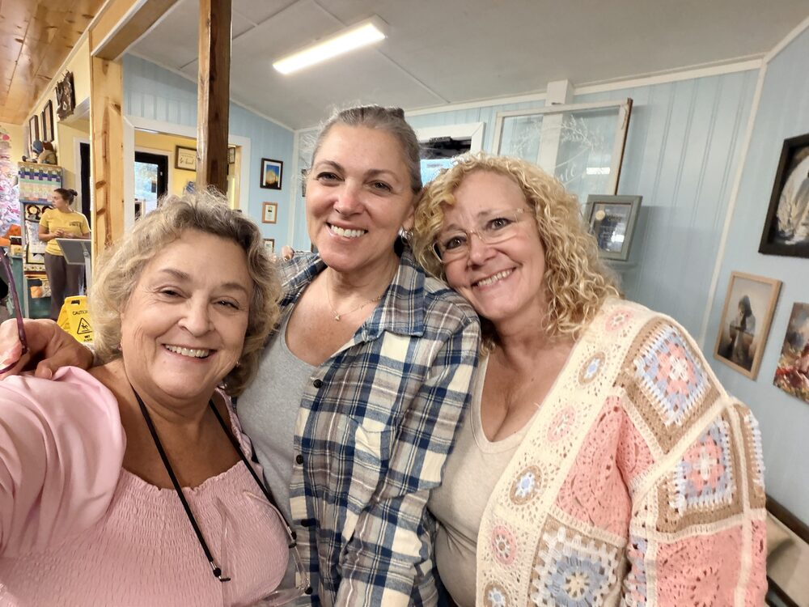

Where we've been
North Carolina — 1 blessing
Murphy — Julie's Place
Stop #1 ✨ Meet Julie! We had dinner at Julie's Place and knew right away she had to be the very first person we showcased on The Blessing Trail. Yes, people pay for her incredible food, but the joy and heart she puts into her work is a true gift to her community. We made her a special jingle to say thank you. Thank you, Julie, for being such a bright light. We'll see you again soon, Lord willing!

Julie's jingle 🎶 Turn your sound on! Read the words
See Julie's spotlight on Facebook →
October 3, 2026